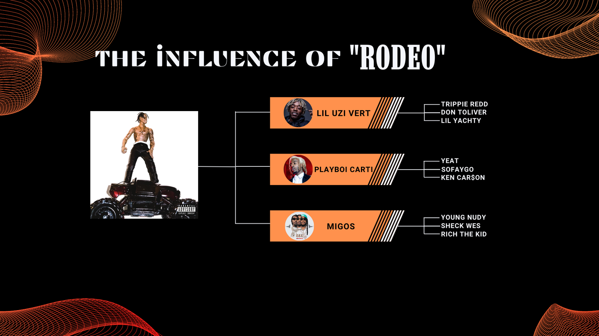

Cultural Influence of Rodeo
Rodeo changed the landscape of hip-hop, inspiring artists to experiment with darker, atmospheric sounds and more introspective lyrics. Travis Scott’s innovative approach paved the way for new hip-hop trends.
Key Influences
- Popularized a darker, more atmospheric sound in mainstream hip-hop
- Influenced artists like Lil Uzi Vert, Playboi Carti, and Don Toliver
- Brought new energy to live performances with theatrical elements and stage effects
Back to Home
